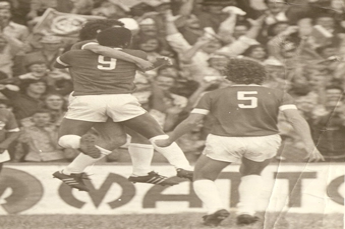
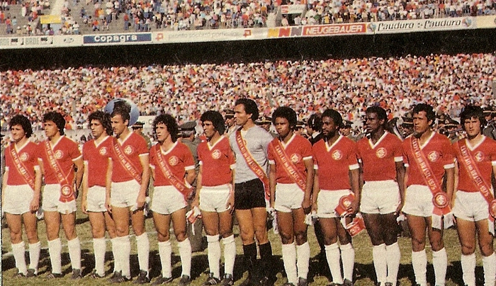
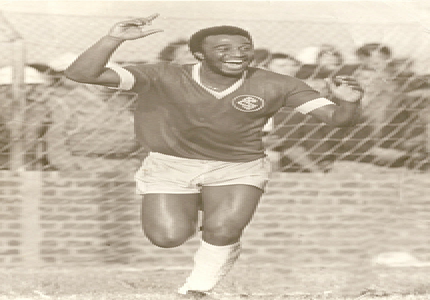
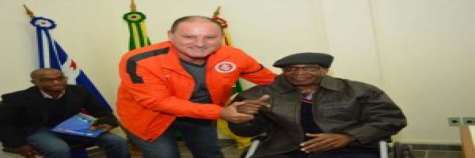
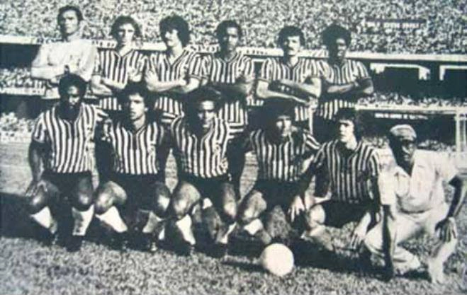
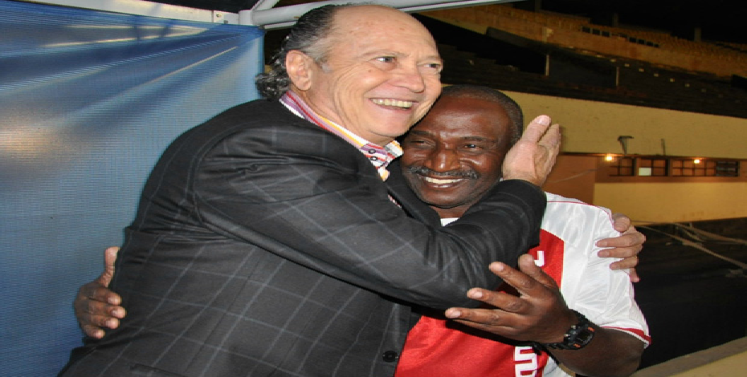

História de Luiz Tadeu Bauru dos Santos
Um dos expoentes da história do futebol de Montenegro, Luiz Tadeu dos Santos, mais conhecido como Tadeu Bauru, faleceu na madrugada de sábado para domingo, aos 64 anos. O ex-atacante do Inter lutava contra uma doença degenerativa e estava internado há duas semanas na Unidade de Terapia Intensiva (UTI). O montenegrino integrou a vitoriosa geração colorada dos anos 1970, tendo atuado ao lado de Falcão, Caçapava, Valdomiro e Manga, e participado dos títulos dos Brasileirões de 1975 e 1976.
Além dos títulos nacionais, Tadeu também participou do octacampeonato gaúcho conquistado pelo Inter. O ex-atleta ganhou destaque quando tinha apenas 16 anos, durante um amistoso entre o Renner e o Inter. Após essa partida, passou a jogar nas categorias de base do clube da capital gaúcha e em pouco tempo foi promovido ao grupo profissional.
Centroavante conhecido pela habilidade e por ser um bom finalizador, deixou o Inter na temporada 1976/77 para defender o Operário, de Campo Grande-MS. Na equipe sul-mato-grossense, chegou à semifinal do Campeonato Brasileiro de 1977, quando o Operário foi eliminado pelo São Paulo e terminou na terceira posição. No jogo de volta contra o tricolor paulista, Tadeu fez o gol da vitória por 1 a 0 (a equipe precisava reverter um 3 a 0). Naquele ano, o Operário passou por equipes como Coritiba, Fluminense, Santa Cruz, Remo e Palmeiras.
Tadeu bauru homenageado
Durante sua carreira profissional, o ex-atacante atuou por Bahia, Cascavel, Caxias, São Paulo, Estrela e São José, sendo os quatro últimos clubes do Rio Grande do Sul. Em maio deste ano, Tadeu recebeu a Honra ao Mérito Legislativo da Câmara de Vereadores de Montenegro. A homenagem teve iniciativa dos vereadores Felipe Kinn (PMDB) e Rose Almeida (PSB), e ocorreu durante sessão solene que integrou a programação comemorativa do aniversário de 144 anos da cidade.
Um dos responsáveis pela homenagem ao ex-atleta, o vereador Felipe Kinn destaca que, além de ser um jogador de qualidade, Tadeu Bauru também foi uma grande pessoa. “Cidadão do bem, Tadeu era uma pessoa bem quista e muito reconhecida. Marcou a geração de 70, participou de uma grande época do Inter. Era um centroavante que incomodava os adversários o tempo todo. Tive o prazer de acompanhar ele jogando com meu pai no Bolamar de 2002, nos veteranos. Foi ali que conheci ele pessoalmente”.
Presente na sessão solene que homenageou Tadeu Bauru na Câmara, em maio, o assessor de comunicação Silvio Kaél relembra a alegria do ex-jogador ao receber a Honra ao Mérito. “Ele não chegou a falar na sessão, pois estava sem condições, mas esboçou sorrisos. Estava muito feliz. Foi uma homenagem justa, pois foi um dos poucos da cidade que jogou futebol profissionalmente e teve sucesso”, ressalta.
Nos anos de 1976 e 1977 jogou no Operário, de Campo Grande (MS), que era treinado pelo ex-goleiro do Fluminense, do Rio de Janeiro, Carlos Castilho e tinha como grande destaque o goleiro Manga.
Foi uma época em que os mato-grossenses tiveram destacada atuação no Campeonato Brasileiro, derrotaram equipes tradicionais como Coritiba, Fluminense, Santa Cruz , Remo e Palmeiras, chegando à semifinal, contra o São Paulo, e conquistando o terceiro lugar na competição.
No primeiro jogo, o Operário perdeu por 3 X 0 no Morumbi. Na segunda partida, no Morenão, em Campo Grande, o Operário ganhou por 1 X 0, gol de Tadeu Bauru.
O presidente do Operário Futebol Clube, Estevão Petrallas, lamentou a morte do ídolo do clube. Segundo Petrallas, Tadeu faz parte da história do Operário, pois fez parte de uma geração que marcou o futebol local.
Falcão reencontra antigo colega de Internacional em Campo Grande
A viagem do Inter a Campo Grande reservou uma surpresa para Falcão no domingo. Após a vitória por 4 a 2 sobre o América-MG no estádio Morenão, o técnico reencontrou um antigo companheiro de clube: Tadeu Bauru, ex-atacante colorado que mora atualmente na capital sul-mato-grossense.
Tadeu Bauru jogou com Falcão entre 1975 e 1977. O treinador lembra bem do estilo de jogo do colega.
- Ele gostava de conduzir a bola bem perto para chutar – comentou Falcão.
Em uma rápida conversa antes da coletiva de imprensa, os dois se abraçaram e recordaram momentos em que atuaram juntos pelo Inter.- Houve uma excursão para a Itália que fizemos com o Minelli (Rubens Minelli, ex-técnico do Inter) em 1975. Eu lembro que o Falcão disse: "Vou vir jogar aqui". E não é que ele foi mesmo? Virou o "Rei de Roma" - relembrou Tadeu.